Shelves on top right of closet, from top to bottom.
 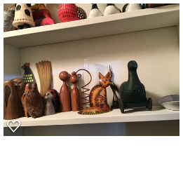
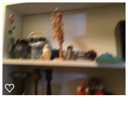
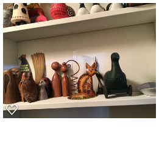
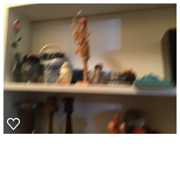
Val will take some of the tall candle sticks on the left:
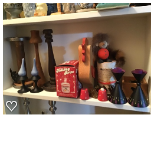 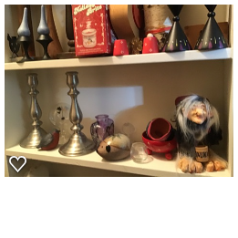 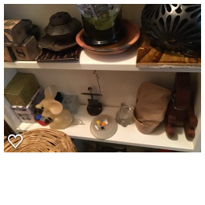 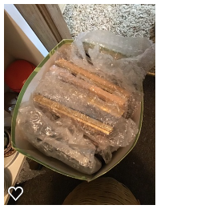 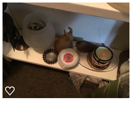Shelves of top left of closet, from top to bottom. Someone needs to keep the clay black and white cat sculpture/vase on the top shelf. Beth, do you want it? Is it by Michael Norman or by someone else?
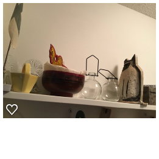 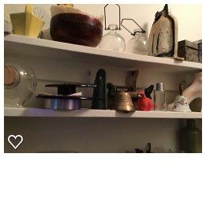 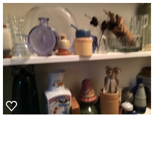 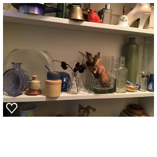 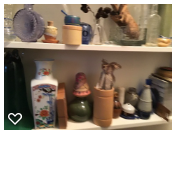Things on the floor, next:
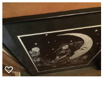 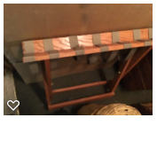A bag with yarn of some type in it; I didn't fully open it:
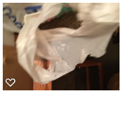Cedar chest with thing on it:
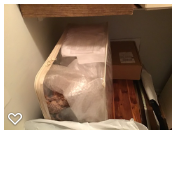Blurry photo is the round wicker basket I had in my Nelson Drive bedroom that has a purple scarf or knitted thding (?) or similar?
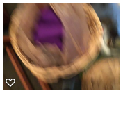There's a paper portfolio with things in it. It contains things from Finnstock -- the poems mom wrote plus the scale drawing of the chicken coop house. I will take those for safeguarding!
.png) 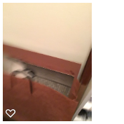
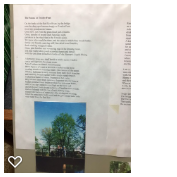
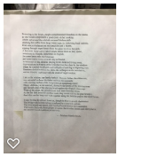
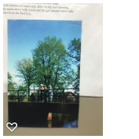
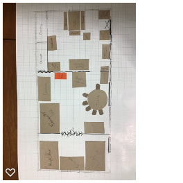
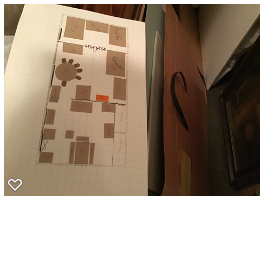
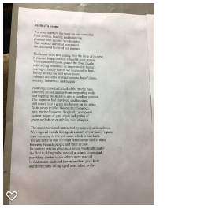
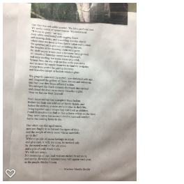
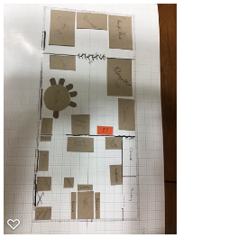
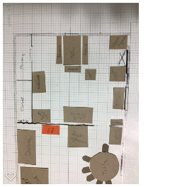
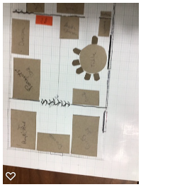
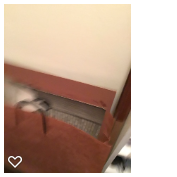
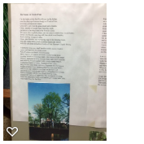
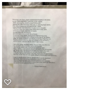
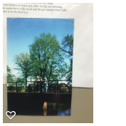
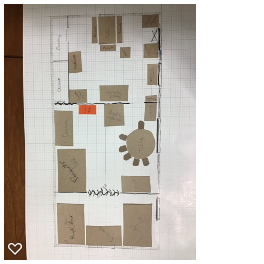
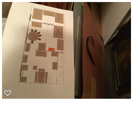
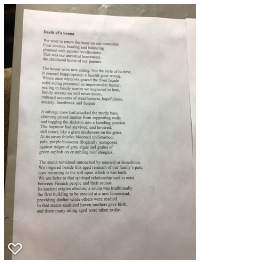
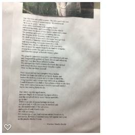
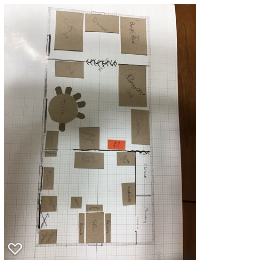
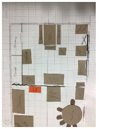
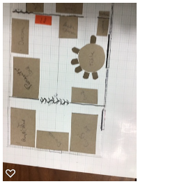
Shelves in the back of the closet, from top to bottom:
.png) 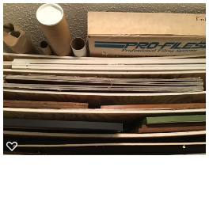
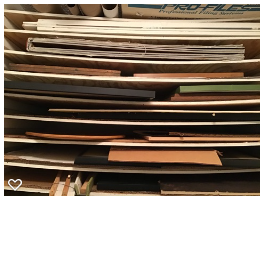
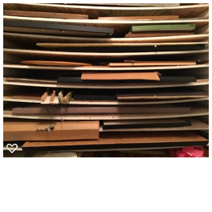
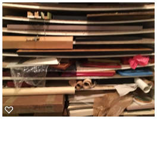
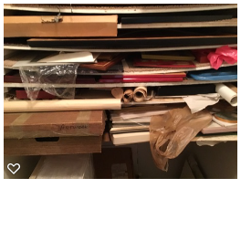
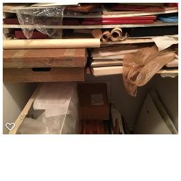
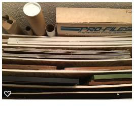
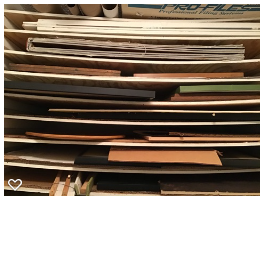
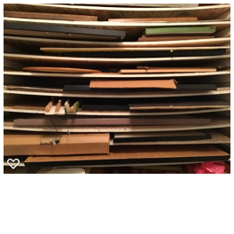
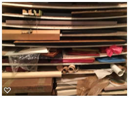
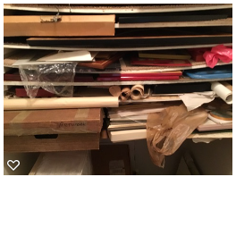
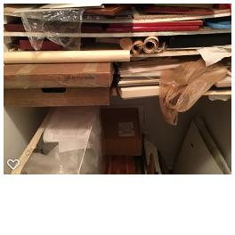
I tried to identify each framed item. One is Big Bird:
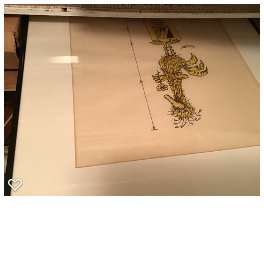This is the paper cutting from Mexico that hung in the living room that I think I brought back to mom and dad from Mexico in 1980:
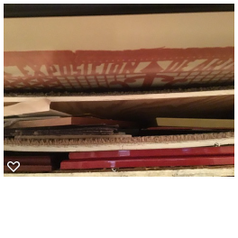Red frame with a map image, rings a bell but I can't quite place it:
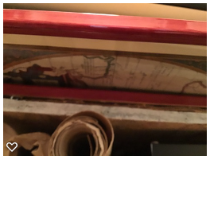Other framed pictures:
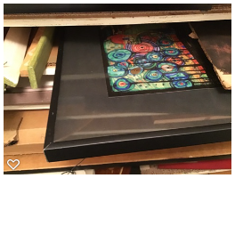 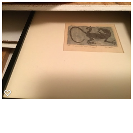I don't recall whether this is framed or is simply another in the collection of things on the shelves:
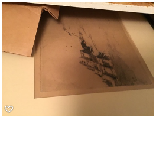.png)
I think this may be a purple-ish framed item that I couldn't reach to identify? I don't remember:
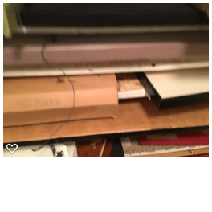Near the top there is a black-framed item and I couldn't see the top of it and didn't climb up to look. It has Mary Grief's framing information on the back.
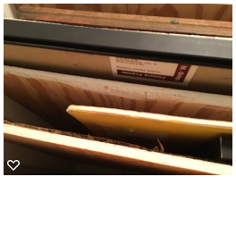